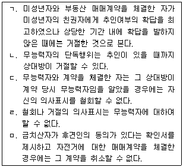
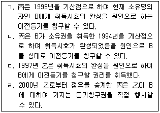

변리사-1차(2교시) (2012-02-26 기출문제)
1. 대리에 관한 설명으로 옳은 것은? (다툼이 있는 경우에는 판례에 의함)
- 자기계약이나 쌍방대리를 금지하는 규정은 거래안전에 중대한 영향을 미치므로 강행규정이다.
- 대리인이 채무이행을 위하여 자기계약으로 대물변제를 하거나 경개를 하는 것은 허용된다.
- 본인으로부터 아파트에 관한 임대 등 일체의 관리권한을 위임받아 본인으로 가장하여 아파트를 임대한 자가 다시 자신을 본인으로 가장하여 그 임차인에게 아파트를 매도한 경우, 그 매매계약은 본인에게 효력이 있다.
- 무권대리행위의 추인은 무권대리인에 대하여 할 수 없다.
- 부동산에 관하여 계약체결의 대리권을 수여받은 자는 특별한 사정이 없는 한 계약을 해제할 권한이 있다.
(정답률: 알수없음)

2. 조건부 법률행위에 관한 설명으로 옳지 않은 것은? (다툼이 있는 경우에는 판례에 의함)
- 혼인이나 입양에는 조건을 붙이지 못한다.
- 부첩(夫妾)관계의 종료를 해제조건으로 한 증여는 조건 없는 증여로서의 효력을 가진다.
- 소유권유보부 매매의 경우, 소유권은 정지조건부로 매수인에게 이전한다.
- 조건의 성부가 미정한 권리의무는 일반규정에 의하여 처분할 수 있다.
- 조건이 법률행위의 당시에 이미 성취할 수 없는 것인 경우에는 그 조건이 해제 조건이면 조건없는 법률행위로 하고, 정지조건이면 그 법률행위는 무효로 한다.
(정답률: 알수없음)
3. 甲은 본인, 乙은 甲의 임의대리인, 丙은 대리인과 계약을 체결한 상대방이다. 다음 설명으로 옳지 않은 것은?
- 乙이 甲을 위한 계약임을 표시하지 아니하였으나 丙은 乙이 甲의 대리인으로서 한 것임을 알 수 있었던 경우, 계약의 효력이 甲에게 미친다.
- 甲이 丙의 기망행위를 이유로 계약을 취소하려고 하는 경우, 계약체결이 丙의 기망행위로 영향을 받았는지의 유무는 乙이 아니라 甲을 표준으로 하여 결정한다.
- 甲이 한정치산자인 乙을 대리인으로 선임한 경우, 甲은 乙의 행위무능력을 이유로 대리행위의 효력을 부인할 수 없다.
- 乙은 부득이한 사유가 있는 때에는 甲의 승낙 없이 복대리인을 선임할 수 있다.
- 乙이 대리인으로 선임된 후 파산선고를 받게 되면 대리권은 소멸한다.
(정답률: 알수없음)
4. 甲은 강제집행을 피하기 위해 친구 乙과 짜고 허위로 매매계약서를 작성한 후 그의 유일한 부동산을 乙명의로 소유권이전등기를 해 주었다. 다음 설명으로 옳지 않은 것은? (다툼이 있는 경우에는 판례에 의함)
- 乙이 선의의 丙에게 그 부동산을 전매하여 소유권이전등기를 완료한 경우, 甲은 丙에게 甲과 乙의 매매계약의 무효를 주장할 수 없다.
- 乙이 선의의 丙에게 그 부동산을 전매하여 소유권이전등기를 완료한 경우, 甲은 乙에게 부당이득반환을 청구할 수 있다.
- 乙이 자기의 채무를 담보하기 위하여 선의의 채권자 丙에게 위 부동산에 저당권을 설정한 경우, 甲은 丙의 저당권설정등기의 무효를 주장할 수 없다.
- 악의의 丙이 乙로부터 그 부동산을 양수한 후 선의의 丁에게 다시 매도하여 이전등기를 마친 경우, 甲은 丁을 상대로 그 명의의 등기말소를 청구할 수 없다.
- 甲이 乙로부터 부동산을 매수하여 이전등기를 마친 丙을 상대로 허위표시를 이유로 그 명의의 등기말소소송을 제기한 경우, 선의의 증명책임은 丙에게 있다.
(정답률: 알수없음)
5. 법인의 불법행위책임(민법 제35조)에 관한 설명으로 옳지 않은 것은? (다툼이 있는 경우에는 판례에 의함)
- 법인의 불법행위책임을 인정하기 위해서는 외형상 대표기관의 직무행위라고 판단되는 행위가 있으면 족하고 일반불법행위의 요건까지 갖추어야 하는 것은 아니다.
- 법인이 대표기관의 선임ㆍ감독에 주의를 다한 경우에도 법인의 불법행위책임이 성립할 수 있다.
- 법인의 대표자에는 그 명칭이나 대표자로 등기되었는지 여부를 불문하고 법인을 실질적으로 운영하면서 법인을 사실상 대표하여 법인의 사무를 집행하는 사람도 포함된다.
- 종중의 대표자가 직무와 관련하여 불법행위를 한 경우, 종중이 불법행위책임을 진다.
- 대표기관이 법인의 목적과 관계없이 대표기관 자신이나 제3자의 이익을 도모할 목적으로 그 권한을 남용한 것이라 할지라도 상대방이 이를 알았던 경우, 법인의 불법행위책임을 묻지 못한다.
(정답률: 알수없음)
6. 물건에 관한 설명으로 옳지 않은 것은? (다툼이 있는 경우에는 판례에 의함)
- 천연과실은 수취할 권리의 존속기간 일수의 비율로 수취한다.
- 수목의 집단이 관계 법규에 따라 등기된 경우, 그 토지소유권 처분의 효력은 입목에 영향을 미치지 않는다.
- 주물의 소유자가 아닌 자의 물건은 종물이 될 수 없다.
- 물건의 임대료는 법정과실이다.
- 대체물인지 여부는 당사자의 의사가 아니라 일반 거래관념에 따른다.
(정답률: 알수없음)
7. 무능력자와 거래한 상대방을 보호하기 위한 제도에 관한 설명으로 옳은 것만을 모두 고른 것은?

- ㄱ, ㄴ
- ㄱ, ㄴ, ㄷ
- ㄴ, ㄷ
- ㄷ, ㅁ
- ㄷ, ㄹ, ㅁ
(정답률: 알수없음)
8. 권리능력에 관한 설명으로 옳지 않은 것은? (다툼이 있는 경우에는 판례에 의함)
- 태아는 증여를 받을 능력이 있다.
- 태아가 사산한 경우에는 정지조건설에 의하든 해제조건설에 의하든 태아의 권리능력은 부인된다.
- 동시사망 추정의 경우에 사망의 선후가 관계인들의 법적 지위에 중대한 영향을 미치는 점을 감안할 때 충분하고도 명백한 반증이 없으면, 위 추정은 깨어지지 않는다.
- 인정사망은 사망의 확증은 없으나 관공서의 보고에 의하여 가족관계등록부에 사망의 기재를 하여 사망한 것으로 추정하는 제도이다.
- 실종선고 취소 전에는 실종자의 생존사실을 들어 선고의 효과를 다툴 수 없다.
(정답률: 알수없음)
9. 취소할 수 있는 법률행위의 경우, 추인할 수 있는 날로부터 일정한 사유가 있으면 (이의를 보류하지 않은 것을 전제) 추인한 것으로 보는 경우로서 옳지 않은 것은?
- 취소권자가 취소할 수 있는 법률행위의 상대방으로부터 이행청구를 받은 경우
- 취소권자가 채권자로서 강제집행한 경우
- 취소권자가 채권자로서 물적 담보를 취득한 경우
- 취소권자가 취소할 수 있는 매매계약으로부터 취득한 토지에 지상권을 설정한 경우
- 취소할 수 있는 법률행위로부터 발생한 채권의 일부에 대하여 취소권자가 상대방의 이행을 수령한 경우
(정답률: 알수없음)
10. 민법상 기간에 관한 설명으로 옳지 않은 것은?
- 사원총회의 소집통지를 1주간 전에 발송하여야 하므로, 총회일이 3월 15일이라면 늦어도 3월 7일 오후 12시 전까지 소집통지를 발송하여야 한다.
- 기간 계산에 관해 당사자의 약정이 있는 때에는 그에 따른다.
- 과제물을 10월 3일 오후 4시부터 46시간 내에 제출하라고 한 경우, 10월 5일 오후 2시까지 제출하여야 한다.
- 2012년 1월 31일 오후 3시에 친구로부터 500만원을 무상으로 빌리면서 1개월 후에 갚기로 한 경우, 3월 1일은 공휴일이므로 2012년 3월 2일 오후 12시까지 반환하면 된다.
- 1988년 3월 2일 출생한 사람은 2008년 3월 1일 오후 12시가 지나면 성년이 된다.
(정답률: 알수없음)
11. 법률행위의 무효와 취소에 관한 설명으로 옳지 않은 것은? (다툼이 있는 경우에는 판례에 의함)
- 甲이 乙의 사기로 토지를 乙에게 헐값에 판 후 乙이 丙에게 전매한 경우, 사기로 인한 법률행위의 취소의 상대방은 乙이다.
- 토지거래허가 구역 내의 토지의 매도인은 거래허가 전에는 매수인의 대금지급의무불이행을 이유로 계약을 해제할 수 없다.
- 불공정한 법률행위는 법정추인에 의해 유효로 될 수 없다.
- 강박으로 인하여 법률행위를 한 자가 강박상태에서 벗어나기 전에 한 추인도 추인으로서의 효력이 있다.
- 허위표시에 기초하여 무효인 가등기를 유효한 등기로 전용하기로 약정한 경우, 가등기가 소급하여 유효한 등기로 전환되지 않는다.
(정답률: 알수없음)
12. 소멸시효의 중단에 관한 설명으로 옳지 않은 것은? (다툼이 있는 경우에는 판례에 의함)
- 시효완성을 주장하는 채무자가 채무부존재확인의 소를 제기함에 따라 채권자가 피고로서 응소하여 그 소송에서 적극적으로 권리를 주장하고 그것이 받아들여졌더라도 시효는 중단되지 않는다.
- 채무자의 일부변제는 채무 전부에 관하여 시효중단의 효력이 있다.
- 채권자가 채무자를 고소하여 형사재판이 개시되어도 이를 소멸시효의 중단사유인 재판상 청구로 볼 수 없다.
- 재판상의 청구를 한 후 그 소송을 취하한 경우, 그로부터 6월내에 다시 재판상의 청구를 하지 않는 한 시효중단의 효력이 없고 재판외의 최고의 효력만 있다.
- 채권자가 물상보증인이 담보로 제공한 부동산을 압류한 경우, 채무자에게 통지한 후가 아니면 채무자에 대한 시효중단의 효력이 발생하지 않는다.
(정답률: 알수없음)
13. 가등기담보 및 양도담보에 관한 설명으로 옳은 것은? (다툼이 있는 경우에는 판례에 의함)
- 채권자가 담보권을 실행하기 위하여 담보부동산의 객관적 가액에 미치지 못하는 청산금의 평가액을 채무자 등에게 통지한 경우, 이는 담보권실행의 통지로서 효력이 없다.
- 가등기담보권에는 과실수취권이 없으므로 담보권자가 담보부동산을 압류한 경우에도 담보설정자가 그 부동산으로부터 수취하였거나 수취할 수 있는 과실에 대하여 효력이 없다.
- 동산의 양도담보설정자가 그가 점유하던 담보목적물을 제3자에게 처분하고 제3자가 선의취득의 요건을 구비한 때에는, 제3자는 양도담보권의 부담이 없는 완전한 소유권을 취득한다.
- 양도담보에 관한 신탁적 소유권이전설은 양도담보권자와 양도담보설정자 사이의 내부적 관계에서 소유권이 양도담보권자에게 있는 것으로 보고 있다.
- 돼지를 담보목적물로 하여 소유권을 이전하고 점유개정의 방법으로 담보설정자가 계속하여 점유ㆍ관리하면서 사용ㆍ수익하기로 약정한 경우, 담보권은 특별한 사정이 없는 한 돼지가 출산한 새끼 돼지에 대하여 효력이 미친다.
(정답률: 알수없음)
14. 저당권에 관한 설명으로 옳지 않은 것은? (다툼이 있는 경우에는 판례에 의함)
- 부동산 소유자가 이미 채무가 변제되어 말소되어야 할 저당권설정등기를 유용하기로 다른 채권자와 합의하고 저당권이전의 부기등기를 마친 경우, 다른 사정이 없으면 이 등기는 유효하다.
- 부동산의 매수인이 매매목적물에 관한 근저당권의 피담보채무를 인수하는 한편 그 채무액을 매매대금에서 공제하기로 약정한 경우, 다른 특별한 사정이 없으면 이는 이행인수이다.
- 저당권설정자는 “지연배상에 대하여는 원본의 이행기일을 경과한 후의 1년분에 한하여 저당권을 행사할 수 있다.”고 규정한 민법 제360조 단서를 원용하여 저당권자에게 피담보채권의 제한을 주장할 수 없다.
- 근저당권자가 피담보채무의 불이행을 이유로 경매를 신청한 경우, 경매를 신청한 근저당권자의 피담보채권액은 경매신청시에 확정되고 근저당권은 보통의 저당권과 같이 취급된다.
- 경매법원이 담보목적이 아닌 지상건물을 저당 토지의 부합물 또는 종물로 보아 토지와 함께 경매를 진행하여 매각허가를 한 경우, 매수인(경락인)은 그 건물의 소유권을 취득한다.
(정답률: 알수없음)
15. 물권적 청구권에 관한 설명으로 옳은 것은? (다툼이 있는 경우에는 판례에 의함)
- 타인의 기망행위로 물건을 인도한 사람은 인도받은 사람에 대하여 점유물반환청구권을 행사할 수 있다.
- 소유권이전등기 없이 토지를 인도받은 매수인으로부터 다시 토지를 매수하여 점유ㆍ사용하고 있는 자에 대하여 매도인은 토지소유권에 기하여 반환을 청구할 수 있다.
- 소유물방해제거청구권은 방해가 있는 날로부터 1년 이내에 행사하여야 하며, 이 기간은 출소기간이다.
- 점유물방해제거청구권을 행사하기 위해서는 방해자의 고의ㆍ과실에 의한 점유방해가 있어야 한다.
- 소유자는 소유권을 방해할 염려가 있는 자에 대하여 그 예방이나 손해배상의 담보를 청구할 수 있다.
(정답률: 알수없음)
16. 등기부취득시효에 관한 설명으로 옳지 않은 것은? (다툼이 있는 경우에는 판례에 의함)
- 무효인 이중의 소유권보존등기에 기초하여 소유권이전등기를 경료받은 점유자는 등기부취득시효의 완성을 주장할 수 없다.
- 부동산을 점유한 기간과 소유자로 등기된 기간은 각각 10년 이상이어야 하며, 점유와 마찬가지로 등기의 승계가 인정된다.
- 선의와 무과실은 점유취득에 관한 것이고 등기에 관한 것이 아니다.
- 시효완성 후 그 부동산의 소유권등기가 적법한 원인 없이 제3자 명의로 소유권이전등기가 된 경우, 그 점유자는 소유권을 상실한다.
- 상속을 원인으로 점유를 승계하여 시효완성을 주장하는 점유자는 상속 후 10년이 경과하더라도 피상속인이 점유를 개시한 때에 무과실이었음을 증명하여야 한다.
(정답률: 알수없음)
17. 권리질권에 관한 설명으로 옳지 않은 것은?
- 특허권은 권리질권의 목적이 될 수 있다.
- 권리질권에 물상대위가 인정된다.
- 질권자는 질권의 목적이 된 채권을 직접 청구하여 질권을 실행할 수 있다.
- 권리질권의 설정은 법률에 다른 규정이 없으면 그 권리의 양도에 관한 방법에 의하여야 한다.
- 지시채권을 질권의 목적으로 한 질권의 설정은 증서에 배서하지 않더라도 질권자에게 교부함으로써 그 효력이 생긴다.
(정답률: 알수없음)
18. 점유에 관한 설명으로 옳은 것은? (다툼이 있는 경우에는 판례에 의함)
- 점유의 권리추정효로 인하여 점유자의 무과실이 추정된다.
- 선의의 점유자도 본권의 소에서 패소한 때에는 점유를 개시한 때부터 악의의 점유자로 본다.
- 점유자가 점유물을 멸실하여 회복자에 대하여 손해배상책임을 부담하는 경우, 타주점유자는 선의이더라도 손해 전부를 배상하여야 한다.
- 선의의 점유자는 과실수취권이 있으므로 그에게 과실(過失)이 있더라도 회복자에 대하여 불법행위책임을 지지 않는다.
- 선의의 점유자가 통상의 필요비를 지출한 경우, 이는 소유자에게 이익이 되므로 과실을 수취한 점유자는 회복자에 대하여 그 필요비의 상환을 청구할 수 있다.
(정답률: 알수없음)
19. 유치권에 관한 설명으로 옳지 않은 것은? (다툼이 있는 경우에는 판례에 의함)
- 건물점유자가 그 건물에 대하여 유치권을 행사하는 경우, 그 건물의 존재와 점유가 토지소유자에게 불법행위가 되는 때에는 유치권으로 토지소유자에게 대항할 수 없다.
- 수급인이 그의 재료와 노력으로 건물을 신축한 경우, 그는 다른 사정이 없으면 그 건물에 유치권을 행사할 수 있다.
- 유치권자가 그가 점유한 건물에 거주ㆍ사용하는 경우, 그것이 보존에 필요한 행위이더라도 차임에 상당한 이득을 소유자에게 반환하여야 한다.
- 임대인과 임차인 사이에 임차목적물을 반환하는 시기에 권리금을 반환하기로 약정하였더라도 임차인은 권리금 반환청구권으로써 건물에 대하여 유치권을 행사할 수 없다.
- 유치권자가 유치물에 관하여 제3자와 전세계약을 체결하여 전세금을 수령한 경우, 유치물의 소유자에게 전세금에 대한 법정이자 상당액을 부당이득으로 반환하여야 한다.
(정답률: 알수없음)
20. 근저당권에 관한 설명으로 옳은 것은? (다툼이 있는 경우에는 판례에 의함)
- 피담보채무가 확정되기 전에 채무자가 변경되면 변경 후는 물론 변경 전의 채무자에 대한 채권도 근저당권으로 담보된다.
- 동일한 사람이 동일 채무의 담보를 위하여 연대보증계약과 물상보증계약을 체결한 경우, 다른 사정이 없으면 연대보증채무의 범위는 담보물 가액의 범위로 제한된다.
- 채무액이 채권최고액을 초과하는 경우, 근저당권을 설정한 채무자는 그 최고액을 변제하고 근저당권 설정등기의 말소를 청구할 수 있다.
- 근저당권의 목적이 된 부동산의 제3취득자는 채무자 또는 제3자의 변제 등으로 피담보채무의 일부가 소멸하였으나 그 잔존 채무가 채권최고액을 초과하는 경우, 자신이 담보부동산에 의하여 부담하는 책임이 그 변제 등으로 인하여 감축되었음을 항변하지 못한다.
- 동일한 당사자가 동일 부동산에 관하여 동일 거래관계로 발생하는 채무를 담보하기 위하여 순위가 다른 여러 개의 근저당권을 설정한 경우, 그 담보물의 경매대금이 채무 전액을 만족시키지 못할 때에는 경매대금을 선순위근저당 설정시에 발생한 채무에 우선적으로 변제충당하여야 한다.
(정답률: 알수없음)
21. 전세권에 관한 설명으로 옳지 않은 것은? (다툼이 있는 경우에는 판례에 의함)
- 토지를 목적으로 하는 전세권에는 법정갱신이 인정되지 않는다.
- 전세권이 법정갱신된 경우, 전세권자는 그 등기 없이도 전세권설정자나 그 목적물을 취득한 제3자에 대하여 갱신된 권리를 주장할 수 있다.
- 전세권설정계약의 당사자는 전세금을 현실적으로 지급하지 않고 기존의 채권으로 전세금의 지급에 갈음할 수 있다.
- 전세권의 존속기간 동안 전세권을 존속시키기로 하면서 전세권과 분리하여 전세금반환채권만을 확정적으로 양도하기로 하는 전세권자와 제3자의 약정은 효력이 없다.
- 건물의 일부에 대하여 전세권이 설정되어 있는 경우, 그 전세권의 목적이 된 부분이 구조상ㆍ이용상 독립성이 없어 독립한 소유권의 객체로 분할할 수 없는 때에는 전세권자는 전세금을 우선변제 받기 위하여 건물 전부의 경매를 청구할 수 있다.
(정답률: 알수없음)
22. 등기의 추정력에 관한 설명으로 옳지 않은 것은? (다툼이 있는 경우에는 판례에 의함)
- 소유권이전등기는 그 효력을 다투는 측에서 그 무효사유를 주장ㆍ증명하지 않는 한, 등기명의자가 등기원인 사실에 관해 충분히 증명하지 못하였다는 이유만으로 그 등기를 무효라고 단정할 수 없다.
- 소유권이전등기를 마친 경우, 등기절차가 적법하게 이루어지지 않은 것으로 볼만한 의심스러운 사정이 있음이 증명된 때에는 그 추정력은 깨어진다.
- 이해상반행위에 해당하더라도 일단 미성년자로부터 친권자에게 이전등기를 마친 이상, 그 등기에 관하여 필요한 절차를 적법하게 거친 것으로 추정된다.
- 소유권이전등기청구권을 보전하기 위한 가등기를 마친 경우, 소유권이전등기를 청구할 수 있는 원인된 법률관계의 존재가 추정된다.
- 소유권이전등기가 원인 없이 말소된 경우, 그 회복등기를 마치기 전이라도 말소된 소유권이전등기의 최종명의인은 적법한 권리자로 추정된다.
(정답률: 알수없음)
23. 지상권에 관한 설명으로 옳지 않은 것은? (다툼이 있는 경우에는 판례에 의함)
- 지료에 관한 약정을 등기하지 않으면 토지소유자는 구(舊)지상권자의 지료연체사실을 들어 지상권의 특정승계인에게 대항하지 못한다.
- 토지저당권자가 그 목적 토지 위에 추후 용익권의 설정 등으로 인한 담보가치의 감소를 막기 위해 지상권을 취득한 경우, 저당채무가 변제로 소멸하면 그 지상권도 소멸한다.
- 지상권자가 토지소유권의 양도 전후에 걸쳐서 지료지급을 지체한 경우, 양도인과 양수인에 대하여 연체된 지료의 합이 2년분에 이르면 양수인은 지상권의 소멸을 청구할 수 있다.
- 동일인이 소유하던 토지와 그 지상건물이 매매 기타 원인으로 각각 소유자를 달리하게 된 경우, 그 토지의 점유ㆍ사용에 관하여 당사자 사이에 약정이 있는 것으로 볼 수 있는 때에는 관습법상의 법정지상권이 성립하지 않는다.
- 법정지상권의 경우 지료가 결정되지 않았다면 지상권자가 지료를 지급하지 않더라도 지료지급의 지체가 되지 아니한다.
(정답률: 알수없음)
24. 甲은 그가 1977년부터 점유하던 A명의의 X토지를 1995년에 乙에게 매도ㆍ인도하였고, 乙은 2000년에 이를 다시 丙에게 전매ㆍ인도하였으며, 2012년 현재 丙이 X토지를 점유하고 있다. A가 1994년에 B에게 X토지를 매도하고 소유권이전등기를 마쳤다. 다음 설명으로 옳은 것만을 모두 고른 것은? (다툼이 있는 경우에는 판례에 의함)

- ㄱ, ㄴ
- ㄱ, ㄹ
- ㄴ, ㄷ
- ㄷ
- ㄹ
(정답률: 알수없음)
25. 甲은 乙에 대해 8,000만원의 금전채무를, 丙에 대해서는 4,000만원의 금전채무를 부담하고 있다. 甲은 乙에 대한 8,000만원의 채무를 담보하기 위해, 자신의 X주택(시가 1억원)에 乙명의로 저당권을 설정해 주었다. 그 후 채무초과상태에 빠진 甲이 자신의 유일한 재산인 X주택을 丁에게 1억원에 매도하여 소유권이전등기를 해 주었다. 다음 설명으로 옳지 않은 것은? (다툼이 있는 경우에는 판례에 의함)
- 丁이 그와 甲의 거래행위가 채권자를 해함을 안 경우, 乙은 채권자취소권을 행사할 수 있다.
- 丙의 丁에 대한 사해행위취소소송에서 丁이 사해행위임을 몰랐다는 사실에 대한 증명책임은 丁에게 있고, 丁의 선의에 과실이 있는지 여부는 문제되지 않는다.
- 丙은 법원에 소를 제기하는 방법으로 사해행위의 취소를 청구할 수 있을 뿐 소송상의 공격ㆍ방어방법으로는 주장할 수 없다.
- 甲의 사해행위 이후에 甲에게 금전을 빌려준 채권자는 특별한 사정이 없는 한 사해행위의 취소와 원상회복의 효력을 받는 채권자에 포함되지 않는다.
- 채권자취소권의 행사에 있어서 제척기간의 기산점인 채권자가 '취소원인을 안 날'은 채무자가 채권자를 해함을 알면서 사해행위를 하였다는 사실을 알게 된 날을 의미한다.
(정답률: 알수없음)
26. 甲이 자신의 부동산을 乙에게 매도하고, 乙은 그 부동산을 丙에게 매도하였으나 아직 그 부동산의 등기명의가 甲으로 되어 있다. 다음 설명으로 옳지 않은 것은?(다툼이 있는 경우에는 판례에 의함)
- 丙이 乙의 甲에 대한 등기청구권을 대위행사하기 위해서는, 乙의 무자력을 필요로 하지 않는다.
- 乙이 丙의 채권자대위권 행사 사실을 알게 된 후에 甲과의 매매계약을 합의해제하여 乙의 소유권이전등기청구권을 소멸시켰더라도 乙은 이로써 丙에게 대항할 수 없다.
- 丙이 甲을 상대로 채권자대위소송을 제기하여 확정판결을 받은 경우, 乙이 채권자대위소송이 제기된 사실을 알았다면 그 판결의 효력은 乙에게 미친다.
- 乙이 甲에 대한 권리를 재판상 행사하여 패소의 판결을 받은 경우, 丙은 乙의 등기청구권을 대위행사할 수 없다.
- 丙의 乙에 대한 소유권이전등기청구권의 소멸시효가 완성된 경우, 甲은 乙의 소유권이전등기청구권을 대위행사하는 丙에게 소멸시효의 완성을 원용할 수 있다.
(정답률: 알수없음)
27. 이행기와 이행지체에 관한 설명으로 옳지 않은 것은? (다툼이 있는 경우에는 판례에 의함)
- 이행기 있는 지시채권이나 무기명채권의 채무자는 그 이행기가 도래하였더라도 소지인이 그 채권증서를 제시하여 이행을 청구한 때로부터 지체책임이 있다.
- 반환시기의 약정이 없는 금전소비대차의 차주는 대주가 이행을 청구한 때로부터 지체책임이 있다.
- 당사자가 불확정한 사실이 발생한 때를 이행기로 정한 경우, 그 사실이 발생한 때는 물론 그 사실의 발생이 불가능하게 된 때에도 이행기가 도래한 것으로 보아야 한다.
- 타인의 토지를 점유함으로써 발생한 부당이득반환채무는 기한이 없는 채무이므로, 점유자는 이행청구를 받은 때로부터 지체책임이 있다.
- 채무자는 자기에게 과실이 없는 경우에도 원칙적으로 그 이행지체 중에 생긴 손해를 채권자에게 배상하여야 한다.
(정답률: 알수없음)
28. 이행보조자에 관한 설명으로 옳은 것은? (다툼이 있는 경우에는 판례에 의함)
- 이행보조자는 채무자의 지시ㆍ감독을 받아야 하므로 채무자에 대한 관계에서 종속적인 지위에 있어야 한다.
- 이행보조자의 행위로 채무자가 채무불이행책임을 지는 경우, 과실의 유무를 판단하는 주의의무의 정도는 이행보조자를 기준으로 판단한다.
- 채무자가 이행보조자에게 맡긴 이행업무와 이행보조자의 행위가 객관적ㆍ외형적으로 관련이 없는 경우에도 채무자는 이행보조자의 고의ㆍ과실에 대하여 채무불이행책임을 진다.
- 임대인이 임대차계약에 따라 임대물에 추가시설을 설치하기 위하여 제3자에게 공사를 맡긴 경우, 공사 중 제3자의 과실로 화재가 발생하였다면 임대인은 임차인에게 채무불이행책임을 진다.
- 임대인의 이행보조자가 임차인으로 하여금 임차목적물을 사용ㆍ수익하지 못하게 함으로써 임대인은 채무불이행에 의한 책임을 지고 그 이행보조자는 불법행위책임을 지는 경우, 양자는 부진정연대채무가 아니다.
(정답률: 알수없음)
29. 甲은 乙과 丙에 대해 각각 금전채무를 부담하고 있다. 丁은 甲의 乙ㆍ丙에 대한 채무를 담보하기 위해 자신의 X부동산에 乙명의의 1순위 근저당권을, 丙명의의 2순위 근저당권을 설정해 주었다. 또한 丁은 1순위 근저당채무만을 면책적으로 인수하기로 甲과 약정하였고, 乙이 이에 동의하였다. 다음 설명으로 옳은 것은? (다툼이 있는 경우에는 판례에 의함)
- 丁의 면책적 채무인수로 甲의 乙에 대한 채무는 소멸하였으므로, 저당권의 부종성에 따라 1순위 근저당권은 소멸한다.
- 丁은 1순위 근저당채무의 성립ㆍ존속을 저지ㆍ배척하는 모든 항변사유를 乙에게 주장할 수 있다.
- 丙의 담보권실행으로 X부동산이 제3자에게 매각된 경우, 丙의 근저당권은 소멸하나 乙의 근저당권은 소멸하지 않는다.
- 만약 근저당권이 설정된 후 丁이 X부동산의 소유권을 제3자에게 이전한 경우, 제3자가 피담보채무를 변제하더라도 丁은 근저당권설정등기의 말소를 청구할 수 없다.
- 만약 채무를 인수한 丁명의로 채무자변경의 부기등기가 되기 전에, 丙이 2순위 근저당권설정등기를 하였다면 부기등기는 丙에 대해서는 그 효력이 없다.
(정답률: 알수없음)
30. 부진정연대채무에 관한 설명으로 옳은 것은? (다툼이 있는 경우에는 판례에 의함)
- 공동임차인의 차임지급채무는 부진정연대채무이다.
- 어느 부진정연대채무자가 채권자에 대하여 상계할 채권을 가지고 있음에도 상계를 하지 않은 경우, 다른 부진정연대채무자는 그 채권을 가지고 상계할 수 없다.
- 손해를 배상한 공동불법행위자는 다른 공동불법행위자에게 그 과실의 비율에 따라 구상할 수 있고, 이 경우 다른 공동불법행위자의 구상채무는 부진정연대채무에 해당한다.
- 채권자가 부진정연대채무자 중 1인에 대하여 이행청구를 한 경우, 다른 채무자에 대하여 시효중단의 효과가 발생한다.
- 피해자가 공동불법행위자 중 1인에 대하여 한 채무면제의 효력은 다른 공동불법 행위자에게 미친다.
(정답률: 알수없음)
31. 선택채권 등에 관한 설명으로 옳지 않은 것은? (다툼이 있는 경우에는 판례에 의함)
- 법률행위 또는 법률의 규정에 의하여 선택권자가 정해지지 않은 경우, 선택권은 채무자에게 있다.
- 무권대리인의 상대방이 가지는 계약이행 또는 손해배상청구권의 소멸시효는 무권대리행위를 한 때부터 진행한다.
- 당사자 쌍방의 과실 없이 어떤 급부가 불능으로 된 때에는, 채권의 목적은 나머지 급부에 존재한다.
- 선택권이 있는 제3자가 선택할 수 있는데도 선택하지 않은 경우, 채권자나 채무자는 상당기간을 정하여 그 선택을 최고할 수 있고, 제3자가 그 기간 내에 선택하지 않으면 선택권은 채무자에게 이전한다.
- 채권자에게 선택권이 있는 경우, 채무자의 과실로 어떤 급부가 이행불능이 된 때에는 채권자는 불능이 된 급부를 선택할 수 있다.
(정답률: 알수없음)
32. 채권의 소멸에 관한 설명으로 옳은 것은? (다툼이 있는 경우에는 판례에 의함)
- 경개계약에 의하여 성립된 신채무의 불이행을 이유로 경개계약을 해제할 수 있다.
- 대금지급채무에 갈음하여 대물변제한 물건에 하자가 있는 경우, 대물변제는 무효이다.
- 대항력을 갖춘 주택임차인이 그 주택을 경락받아 소유권을 취득한 경우, 특별한 사정이 없는 한 임대차계약에 기한 채권은 혼동으로 인하여 소멸한다.
- 채무자가 적법하게 변제공탁하여 채권담보를 위한 동산질권이 소멸하였더라도 채무자는 공탁물을 회수할 수 있다.
- 조합으로부터 부동산을 매수하여 대금지급채무를 지는 자는 조합원 중의 1인에 대한 자신의 채권과 상계할 수 있다.
(정답률: 알수없음)
33. 민법상 임차권의 양도와 임차물의 전대에 관한 설명으로 옳지 않은 것은? (다툼이 있는 경우에는 판례에 의함)
- 임차인이 임대인의 동의 없이 임차권을 양도하였더라도 나중에 임대인이 이에 동의하면, 임대인은 무단양도를 이유로 계약을 해지할 수 없다.
- 임대차를 더 이상 지속시키기 어려울 정도로 당사자 사이의 신뢰관계를 파괴하는 임대인에 대한 배신행위가 아니라고 인정되는 특별한 사정이 있는 때에는, 임대인은 자신의 동의 없이 임차권이 이전되었다는 것만을 이유로 임대차계약을 해지할 수 없다.
- 임대인의 동의를 받아 임차물을 전대한 경우, 전차인은 임대인과 전대인 중 어느 한 사람에게 차임을 지급하면 지급의무를 면하므로, 전차인이 차임을 전대인에게 지급하였다면 임대인의 차임청구가 있더라도 이를 거절할 수 있다.
- 임대인의 동의와 함께 임차권이 양도된 경우, 그의 동의가 있기 전에 발생한 임차인의 연체차임채무나 손해배상채무는 다른 약정이 없으면 양수인에게 이전되지 않는다.
- 건물소유를 목적으로 하는 대지임차권을 가진 자가 제3자에 대한 채무를 담보하기 위하여 사용ㆍ수익권을 자신에게 유보한 채 대지상의 자기소유의 건물에 제3자 명의의 소유권이전등기를 마친 경우, 대지임차권의 양도 또는 전대가 이루어졌다고 볼 수 없다.
(정답률: 알수없음)
34. 민법상 화해계약에 관한 설명으로 옳지 않은 것은? (다툼이 있는 경우에는 판례에 의함)
- 당사자는 착오를 이유로 화해계약을 취소하지 못하지만, 화해당사자의 자격 또는 화해의 목적인 분쟁 이외의 사항에 착오가 있는 때에는 취소할 수 있다.
- 상대방의 사기로 인하여 화해의 목적인 분쟁에 관한 사항을 착오하여 화해계약을 체결한 경우, 사기를 이유로 계약을 취소할 수 있다.
- 의사의 치료행위 직후 환자가 사망하여 의사의 치료행위상의 과실이 있었음을 전제로 의사가 환자의 유족에게 거액의 손해배상금을 지급하기로 합의하였으나 그 후 환자의 사망원인이 의사의 치료행위와는 전혀 무관한 것으로 밝혀진 경우, 착오를 이유로 화해계약을 취소할 수 있다.
- 교통사고 피해자 본인이 가해자와 손해배상에 관하여 합의한 경우, 그 화해의 효력은 특별한 사정이 없는 한 피해자의 부모들이 가지는 위자료청구권에 미친다.
- 화해계약이 성립되면 특별한 사정이 없는 한 종전의 법률관계가 어떠하였느냐를 묻지 않고 화해계약에 의하여 새로운 법률관계가 생긴다.
(정답률: 알수없음)
35. 甲은 5월 2일 乙에게 고장난 자신의 시계 수리를 맡기고, 그 시계를 5월 9일에 찾아가면서 수리대금을 지급하기로 하였다. 그런데 甲은 5월 9일 시계의 수리대금을 지급하지 아니한 채 乙에게 그 시계의 반환을 요구하였다. 다음 설명으로 옳지 않은 것은? (다툼이 있는 경우에는 판례에 의함)
- 乙은 甲이 수리대금을 제공할 때까지 동시이행의 항변권을 행사할 수 있다.
- 乙은 甲이 수리대금을 제공할 때까지 유치권을 행사할 수 있다.
- 甲이 수리대금을 제공하여 乙을 수령지체에 빠뜨린 후 甲이 다시 이행제공을 하지 않고 시계의 반환을 청구하면, 乙은 동시이행의 항변권을 행사할 수 있다.
- 乙이 자신의 수리대금 채권을 丙에게 양도하고 甲에게 통지한 경우, 丙이 甲에게 수리대금지급을 청구한 때에는 甲은 乙에게 대항할 수 있는 항변사유로 대항할 수 있다.
- 만약 시계의 소유자가 丁인 경우, 丁이 乙에게 시계의 반환을 청구하면, 乙은 丁에게 유치권을 행사할 수 없다.
(정답률: 알수없음)
36. 甲은 乙소유의 토지를 3,000m2로 알고 1m2에 5만원씩 계산하여 1억 5천만원에 매수하였으나, 나중에 토지를 측량한 결과 2,700m2이었다. 다음 설명으로 옳은 것은? (다툼이 있는 경우에는 판례에 의함)
- 甲과 乙이 면적을 매매가격을 정하는 가장 중요한 요소로 하여 이를 기준으로 가격을 정하였더라도, 매매계약서에 토지의 면적당 가격을 기재하지 않으면 수량을 지정한 매매로 볼 수 없다.
- 선의의 甲은 乙이 300m2를 추후 취득하여 甲에게 이전할 수 없게 되었음이 확실하게 된 사실을 안 날로부터 1년 이내에 대금감액청구권을 행사할 수 있다.
- 甲은 乙에게 원시적 일부불능임을 이유로 부당이득의 반환을 청구하거나 계약체결상의 과실책임을 물을 수 있다.
- 만일 甲이 위 토지를 경매법원에서 매각을 받아 측량한 결과 그 면적이 2,700m2일 경우, 선의의 甲은 배당받은 채권자에게 1,500만원의 반환을 청구할 수 있다.
- 甲이 계약체결시에 토지의 실제면적이 2,700m2임을 알았더라도 甲은 계약의 해제나 손해배상청구를 할 수 있다.
(정답률: 알수없음)
37. 불법행위에 관한 설명으로 옳지 않은 것은? (다툼이 있는 경우에는 판례에 의함)
- 다수의 의사가 의료행위에 관여한 경우 그 중 누구의 과실에 의하여 의료사고가 발생한 것인지 분명하게 특정할 수 없는 때에는 일련의 의료행위에 관여한 의사들 모두에 대하여 공동불법행위책임을 물을 수 있다.
- 건물의 축조의 하자로 인하여 임차인이 연탄가스중독으로 사망한 경우, 건물소유자인 임대인이 공작물책임을 진다.
- 도급인이 수급인의 일의 진행 및 방법에 관하여 구체적인 지휘ㆍ감독권을 유보하고 공사시행에 관하여 구체적으로 지휘ㆍ감독을 한 경우, 도급인은 수급인이나 수급인의 피용자가 불법행위로 제3자에게 가한 손해에 대하여 사용자책임을 진다.
- 사람은 죽음을 피할 수 없으나 장례비는 손해배상의 대상이 될 수 있다.
- 불법행위에 관하여 피해자가 그의 과실로 이익을 받은 경우, 손해배상액을 산정할 때에는 손익상계를 한 다음 과실상계를 하여야 한다.
(정답률: 알수없음)
38. 조합에 관한 설명으로 옳지 않은 것은? (다툼이 있는 경우에는 판례에 의함)
- 조합의 해산결의 이후 조합원의 자동제명 사유가 발생한 경우에도 그 조합원은 해산결의에서 정한 청산방법에 따라 잔여재산의 분배를 구할 수 있다.
- 조합계약에서 업무집행자를 정하지 않은 경우, 조합원 3분의 2이상의 찬성으로 업무집행자를 선임할 수 있다.
- 조합의 청산에 관한 민법규정은 강행규정이므로, 조합원 전원이 합의하더라도 민법이 정하는 청산절차를 밟지 않고 조합재산을 처분할 수 없다.
- 조합 재산상태의 악화나 영업부진 등으로 조합의 목적달성이 매우 곤란하다고 인정되는 객관적인 사정이 있거나 조합원간의 불화ㆍ대립으로 인하여 신뢰관계가 파괴됨으로써 조합업무의 원활한 운영을 기대할 수 없는 경우에는 조합원은 조합의 해산을 청구할 수 있다.
- 조합원의 제명은 정당한 사유가 있는 때에 한하여 다른 조합원의 일치로써 이를 결정할 수 있고, 그 제명결정은 제명된 조합원에게 통지하지 않으면 그 조합원에게 대항하지 못한다.
(정답률: 알수없음)
39. 위임에 관한 설명으로 옳지 않은 것은? (다툼이 있는 경우에는 판례에 의함)
- 수임인은 위임의 본지에 따라 자신의 재산과 동일한 주의로 위임사무를 처리하여야 한다.
- 법무사에게 등기의 신청대리를 의뢰하고 법무사가 이를 승낙하는 법률관계는 위임에 해당한다.
- 위임종료의 사유는 이를 상대방에게 통지하거나 상대방이 이를 안 때가 아니면 이로써 상대방에게 대항하지 못한다.
- 수임인이 위임사무의 처리를 위해 필요비를 지출한 때에는 위임인에 대하여 지출한 날 이후의 이자를 청구할 수 있다.
- 수임인은 위임인의 청구가 있는 때에는 위임사무의 처리상황을 보고하고, 위임이 종료한 때에는 지체 없이 그 전말을 보고하여야 한다.
(정답률: 알수없음)
40. 계약교섭의 당사자 또는 유효한 계약의 당사자가 부담하는 의무에 관한 설명으로 옳은 것은? (다툼이 있는 경우에는 판례에 의함)
- 통상의 임대차에서 임대인은 임차인에게 임대목적물을 제공하여 이를 사용ㆍ수익하게 해야 할 뿐만 아니라, 특별한 사정이 없는 한 안전배려 또는 도난방지 등의 보호의무를 부담한다.
- 사용자가 피용자의 안전을 위한 인적ㆍ물적 환경의 정비 등 필요한 조치를 강구할 보호의무를 위반하여 피용자에게 손해가 발생한 경우, 특별한 사정이 없는 한 그 사고가 피용자의 업무와 관련성이 없거나 예측할 수 없는 때에도 사용자는 손해배상의 책임을 진다.
- 건축공사 일부분의 수급인 甲이 구체적인 지휘ㆍ감독권을 유보하고 재료와 설비를 공급하면서 시공부분만을 시공기술자 乙에게 다시 도급을 준 노무도급관계에서, 甲은 乙이 시공하는 과정에서 그의 생명이나 건강 등을 해치지 않도록 인적ㆍ물적환경을 정비하고 필요한 조치를 강구할 보호의무를 부담한다.
- 부동산 거래에서 거래 상대방이 일정한 사정을 알았다면 그 거래를 하지 않았을 것임이 경험칙상 명백한 경우라도, 계약자유의 원칙에 따라 교섭에서 우월적 지위를 확보하는 수단은 보장되어야 하므로 상대방에게 그런 사정을 사전에 고지할 의무는 없다.
- 어느 일방이 교섭단계에서 계약이 확실하게 체결되리라는 정당한 기대 내지 신뢰를 부여하여 상대방이 그 신뢰에 따라 행동하였음에도 상당한 이유 없이 계약의 체결을 거부하여 손해를 입힌 경우, 계약책임을 물을 수 있다.
(정답률: 알수없음)